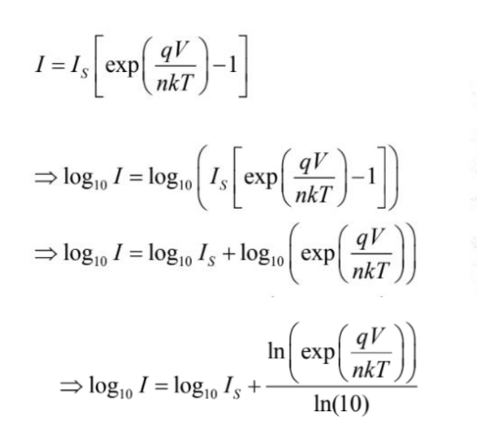
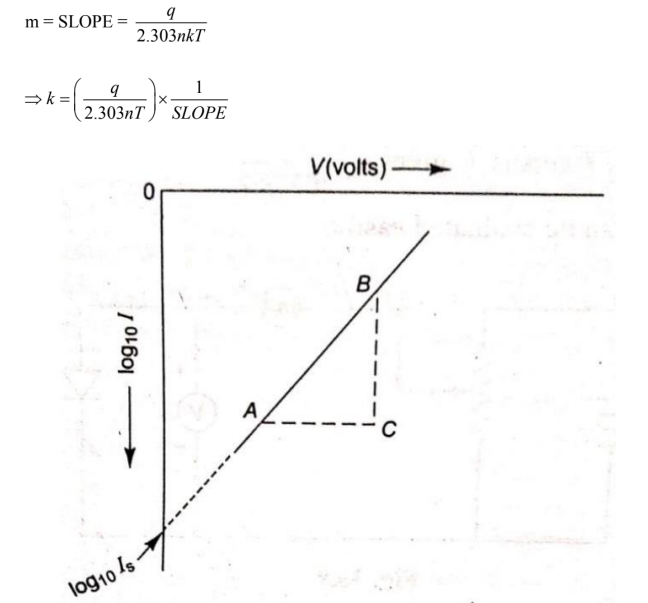
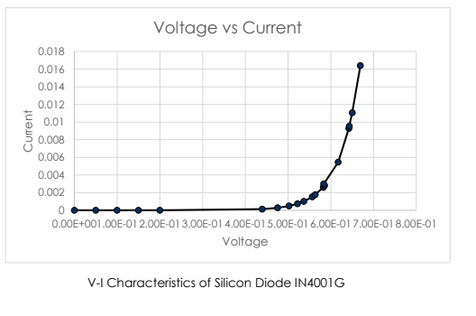

To determine value of Boltzmann's constant by studying forward characteristic.
Boltzmann constant gives relationship between the temperature T of the particle and the
equivalent thermal energy.
E = Thermal Energy of a particle = kT
Theoretical value of Boltzmann Constant ( k ) =1.38 x 10^-23 J/K.
At room Temperature,
T=300K,
E = 0.02586 eV
Forward Biasing is done by providing positive potential to p side of P-N Junction diode.
This reduces the existing depletion layer and electron can easily travel through the depletion layer.
Since minority carriers are not given by external power source and amount of majority carriers is higher than
minority carriers in case of Forward Biasing.
The current due to forward Biasing also depends on Temperature of system. As Temperature varies ,energy of
electron also changes. Hence the role of Boltzmann Constant is vital in relation of Saturation current and
Voltage.
This shows characteristic between Current and Voltage different than one formed due
to Ohm's Law but with:-
I=Is(eqV/nkT-1)
where n=1 for Germanium Diode
n=2 for Silicon Diode.



Animation of the experiment:--
Click here to perform the simulation
Temperature T= ...° K
| S.No. | Voltage, V (volts) | Current (mA) | Current I, (in Amphere) | log10 I |
|---|---|---|---|---|
| 1 | ||||
| 2 | ||||
| 3 | ||||
| 4 |
The graph between V and log10 I is a straight line is shown in the figures. Calculate the slope. [Note: The log10 I are negative values, So the graph actually in the fourth quadrant but the slope remains positive.]
Boltzmann's constant k is calculated from the formula :
k = q/2.303nT * 1/slope
Thus for a silicon diode at 300K
k = 11.59 * 10^-23 / slope
= ... JK^-1
The experimentally obtained value of Boltzmann's constant = ...JK^-1
Standard value = ... 1.38 * 10^-23 JK^-1
% Error = ...%